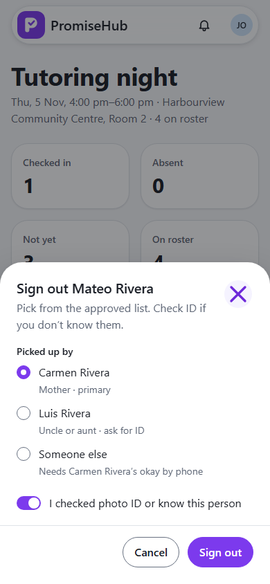
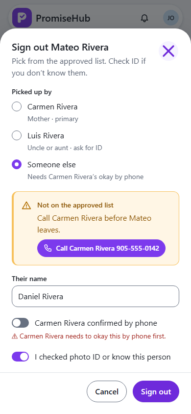

PromiseHub · Video 08
Sign children out
Every child leaves with an adult who is allowed to take them
Every child leaves with an adult who is allowed to take them
The approved list, primary first; the row keeps the time and her name.
Carmen's number one tap away; refused until she okays it.


| Case | Answer |
|---|---|
| Approved adult, tap sent twice | Signed out once, audited |
| Someone else without the okay | 422, ask the primary guardian |
| Guardian from another household | 422 with whom to call |
| Volunteer coordinator | 403, no button |
| Another organization / Pickup off | 404 |
Next: record attendance as a youth worker